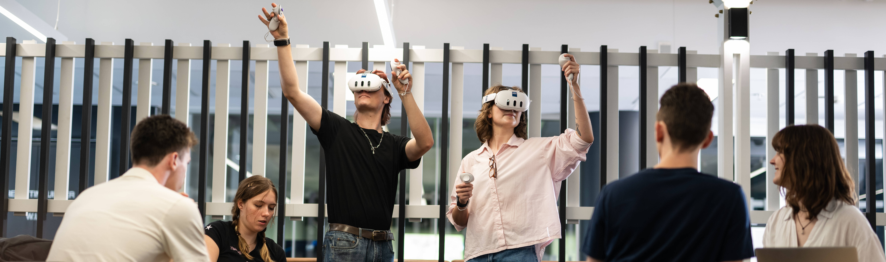
Asher Johnston
Gameplay Programmer + Experience Designer
About Me
Hi! I'm Asher. I'm a full time student at QUT at present, studying the bachelor of games and interactive environments. I'm currently 21 years old, and in my final semester of uni, where my main areas of focus have been software engineering, systems design, and experience design, along with a minor in Scriptwriting for Interactive Environments. I love seeing games that see a norm and choose to go deliberately their own way, whether that be mechanically, in terms of art style or sound design, or in some other way completely. I hope to make games that make people stop and think about whether they've ever seen anything like them before, because I think that's one of the most unique and awesome parts of the games field. Outside of uni, I love playing volleyball and soccer, as well as spending time hanging out with my friends, and I absolutely adore movies and music too.
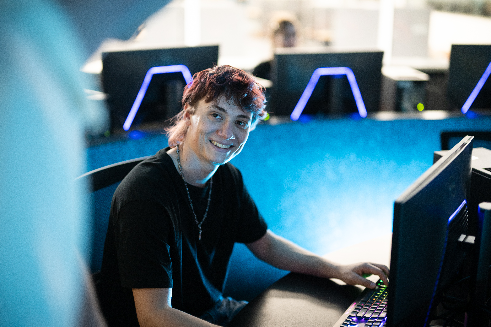
Connect with me!
My Projects
Pantry Panic
Take up the mantle of being a new chef at Glorberto's diner, the hottest spot in the galaxy to grab a bite to eat! Pantry Panic is a fast paced VR game that aims to mimic the frantic feeling of a real-world kitchen with a hefty dose of sci-fi goofiness thrown into the mix.
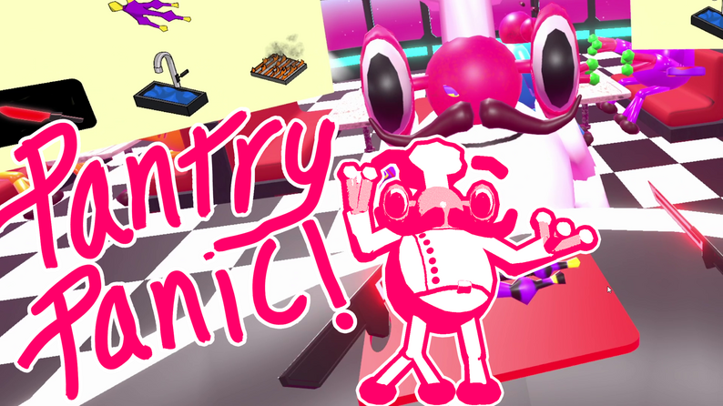
My principal role for this project was as a backend systems programmer, principally for the order system, which generates orders for the player to complete, as well as the order checking logic, which makes sure the orders the player submits are correct. I also worked on the implementation of the sound effects and the chef's dialogue system, which serves as the game's primary tutorialisation. My team members on this project were Ash Tarsilli, Max Kennedy and Xavier Mackay.
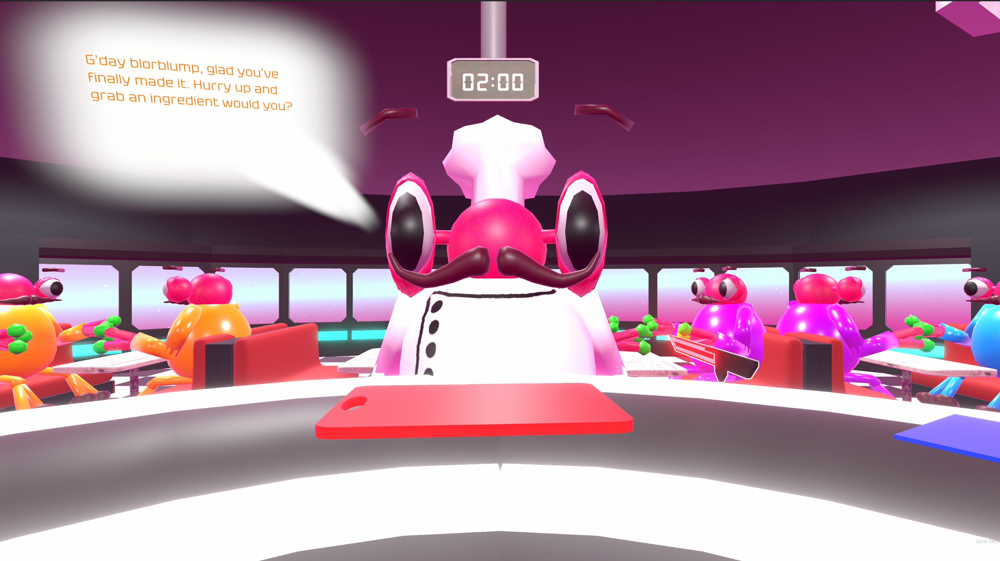
This project was made as a part of QUT's IGB388: Design and Development of Immersive Environments unit, and was developed over the course of approximately 2 months by a team of 4 people, using the Unity Game Engine and Microsoft Visual Studio, with programming conducted in C#. This game was selected for showcase at QUT's 2026 open day.

Aurora Artistry
Gather crystals from a free-flowing stream and place them as you please upon your cosmic canvas in Aurora Artistry,
a game-like experience created in partnership with the Queensland Gallery of Modern Art. Once the crystals have been arranged,
illuminate them with the light button, and watch your arrangement come to glowing life. Players may then share their illuminated
creation to the Galactic Gallery, an online collection of other players artworks.
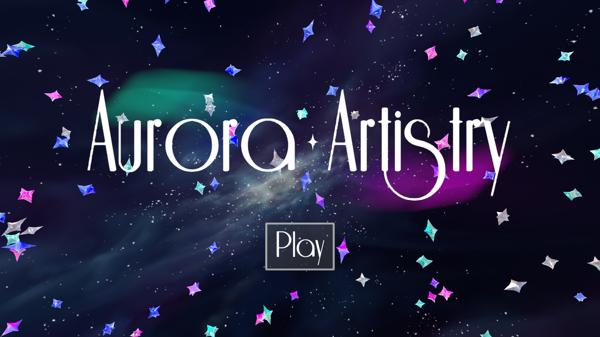
As the sole programmer for this project, I had to take control of the majority of the programmatic elements of this game, including the crystal selection and placement mechanics, as well as the crystal stream functionality, the ui functionality, and the illumination and clean-up features. I also had to handle the backend of the Galactic Gallery, including saving the taken screenshots to an online storage bucket, and then pulling those images on the other end to display on the gallery website. My other team members for this project were Ellan Ngo, who handled art and tech art, Ash Tarsilli, who handled primary design and project management, and Mae Rosewarne, who handled sound design.
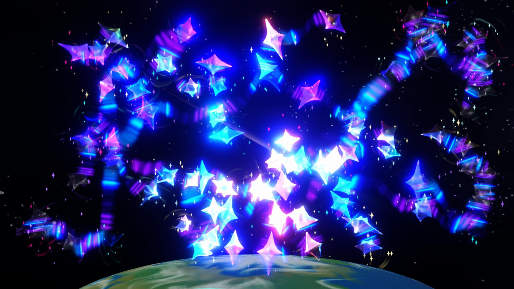
This project was made as a part of QUT's IGB200: Game Studio 2: Applied Game Development, and was developed over the course of approximately 2 months by a team of 4 people. Development was carried out in the Unity Game Engine, making use of C# and Microsoft Visual Studio. The backend for the Galactic Gallery is hosted with Firebase, and the functionality of the website is enabled with Javascript, tied into an HTML5 frontend. This game was selected for showcase at QUT's 2026 Capstone showcase, and we were also approched by Griffith Film School to showcase at their Experimental Game Design Conference.
Cult Of The Devourer
Travelling through the bleak darklands, embody a parasite - an ancient, insatiable force puppeteering a human
host with only one goal in mind: to devour. In a world where Vampire Survivors collides with cosmic horror,
with every life consumed, you mutate further beyond humanity into gloriously hideous forms. While avoiding
the townspeople’s desperate attempts to kill you, fuel your undying hunger by slaughtering and consuming your
enemies to achieve your ultimate monstrous ascension.
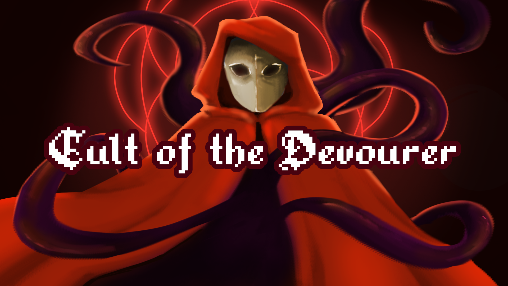
A large part of my job for this project was creating the upgrade system and editor tool, which allowed players to select upgrades for their character, and allowed designers to create these upgrades easily in Unity. On top of designing the functional elements of the upgrade system, I also implemented the in engine appearance of the system, ensuring it paused the game correctly, and also provided an aesthetically pleasing way for players to power up their character. Other duties for this project include adding the opening cutscene, as well as implementing the typewriter text effect for this scene, and creating the transitions between screens throughout the game. My team members for this project were Xavier Mackay, Max Kennedy, Ash Tarsilli, Ellan Ngo, and Mae Rosewarne.
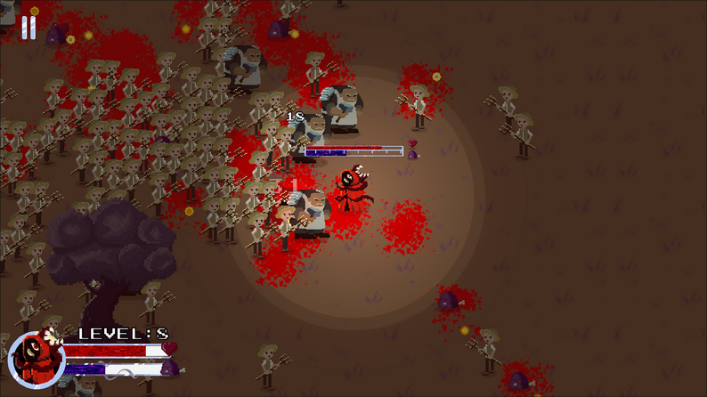
This project was made as a part of QUT's IGB100: Game Studio 1: Mini-Game Development, and was developed over the course of approximately 2 months, by a team of 6 people. Development was carried out in the Unity Game Engine, making use of C# and Microsoft Visual Studio. Audacity was also used for the modulation of sound effects included in the game. This game was selected for showcase at QUT's 2025 Immersive Festival.
Other Projects
At ZomBMart, customer service is the number 1 priority, whether or not those customers have exposed brains. ZomBMart is a 2-4 player
couch co-op, where players must strive to keep the customer satisfaction meter running high, while also earning as many points
as they can, to become employee of the day. This is an ongoing project, developed as part of my QUT BGIE Capstone, with release planned
for early November. My main role on this project has been handling ragdolling for players, as well as managing in-between-round logic,
and the related upgrade menu. This project is being developed in Unreal Engine 5, making use of blueprints, with version control handled via Github.
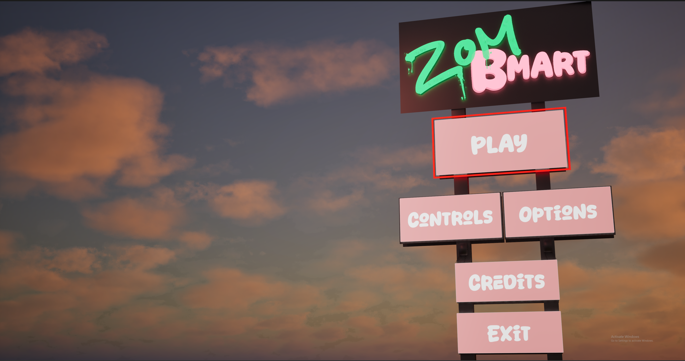
Grainnihilation is a Shmup game created over the course of approximately 4 weeks for QUT's IGB100: Game Studio 1: Mini-Game Development, created exclusively by myself. The main focus for this game was juicing and feedback, as well as creating all facets of a 3D game, something which I had not done before this project. On top of programming and UI design, I also created an upgrade system and modelled 3 enemy types, as well as the player using Unity's probuilder tools.
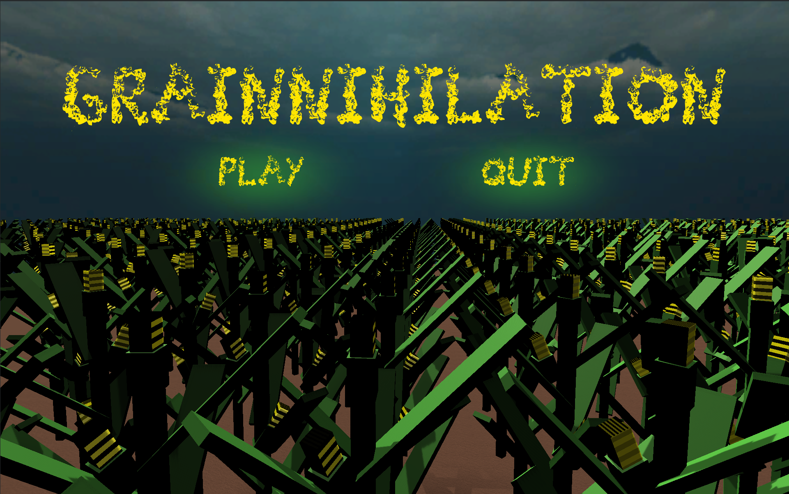
Blight Of Pumpkin Manor was created over the course of 24 hours by a team of 5 people as a part of Griffith Film School's 2025 24 hour
game jam. My main role for this project was the grid snapping system that allows players to place decorations around their yard, as well as the system
that facilitates the children characters walking around the yard in their fixed pattern.
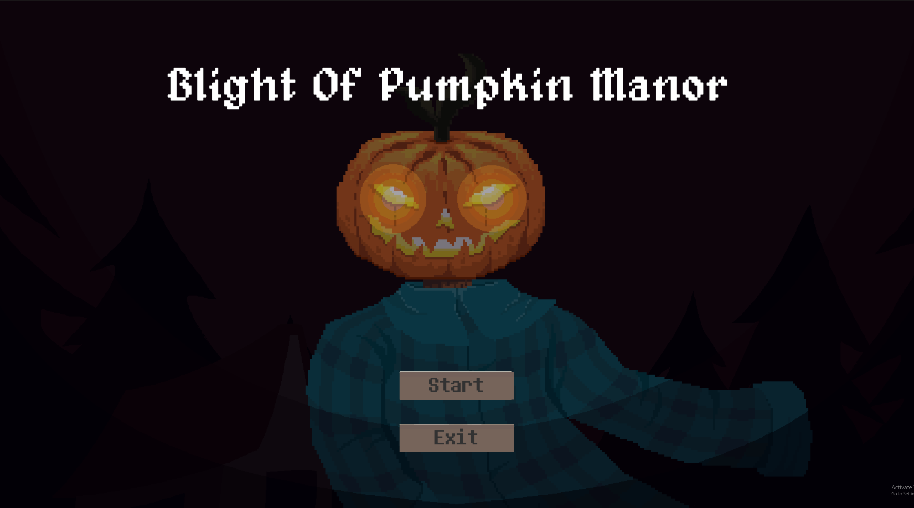